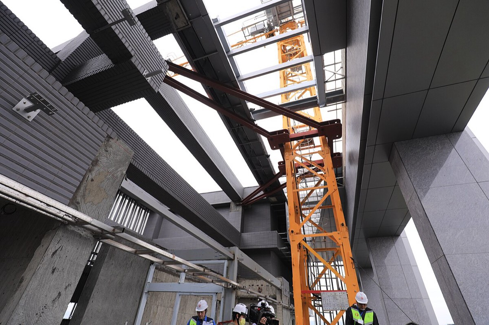
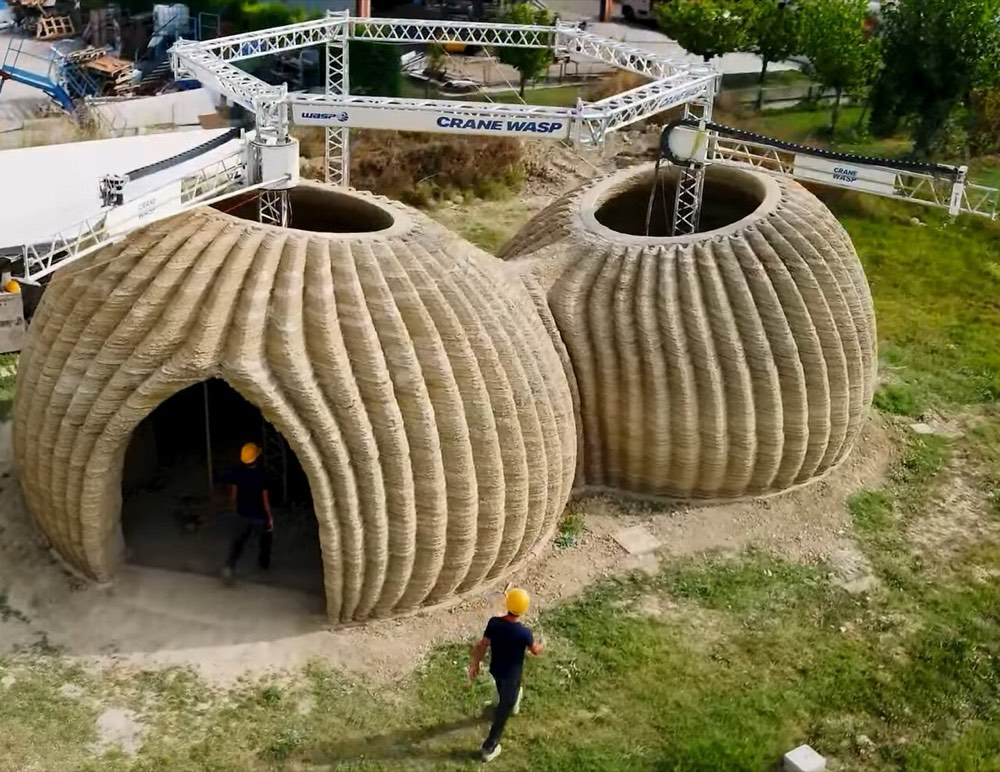
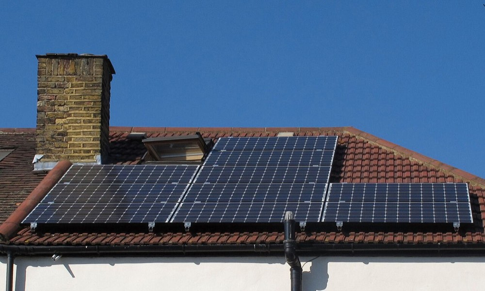
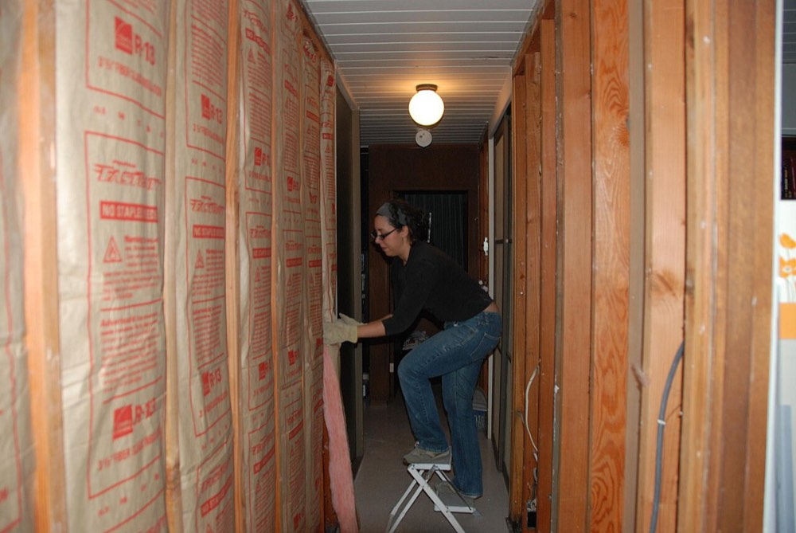

Soluzioni abitative innovative,
pensate per durare.
Dal 1981 progettiamo bioedilizia ecosostenibile ed efficientamento energetico a norma NZEB e Case Green — per il comfort, il benessere e la salubrità di chi costruisce con noi.
Servizi
Otto aree di intervento. Tocca una scheda per saperne di più.

Edilizia & Costruzioni
scopri di più →
Bioarchitettura
scopri di più →
Energie Rinnovabili
scopri di più →
Edilizia & Costruzioni
leggi di piùchiudi
Bioarchitettura
leggi di piùchiudi
Isolamento Termico & Acustico
leggi di piùchiudi
Energie Rinnovabili
leggi di piùchiudi
Deumidificazione
leggi di piùchiudi
Consulenza Immobiliare
leggi di piùchiudi
Certificazioni Energetiche
leggi di piùchiudi
Cultura d’Impresa
leggi di piùchiudi
Metodo
Dal primo sopralluogo alla consegna: un percorso in cinque fasi.
Sopralluogo
Analisi dello stato di fatto e ascolto delle esigenze.
Progetto
Elaborazione architettonica e scelta delle soluzioni tecniche.
Pratiche
Permessi, computi metrici e capitolato lavori.
Cantiere
Direzione lavori con imprese edili qualificate.
Agibilità
Collaudo finale e certificazione.
Uno studio tecnico di progettazione e servizi integrati, a Monte San Giusto, nelle Marche.
Il Geom. Germano Volatili guida lo studio affiancando privati, aziende e istituzioni in interventi di edilizia, bioarchitettura ed efficientamento energetico, con un metodo che unisce esperienza pratica e aggiornamento costante.
continua a leggere
Dal 1981 lo studio lavora con un approccio di consulenza tecnica integrata, seguendo ogni intervento dalla progettazione fino alla certificazione finale. La collaborazione con architetti, ingegneri e geologi, e con aziende leader nel restauro e nella nuova costruzione, permette di coordinare competenze diverse su ogni cantiere, in Italia e all’estero.
Galleria
Le immagini qui sotto sono materiale stock, usate per mostrare formato e impaginazione — da sostituire con fotografie reali dei cantieri.

IsolamentoParliamo del tuo progetto.
Un sopralluogo è il primo passo. Scrivi o chiama lo studio per fissare un appuntamento.